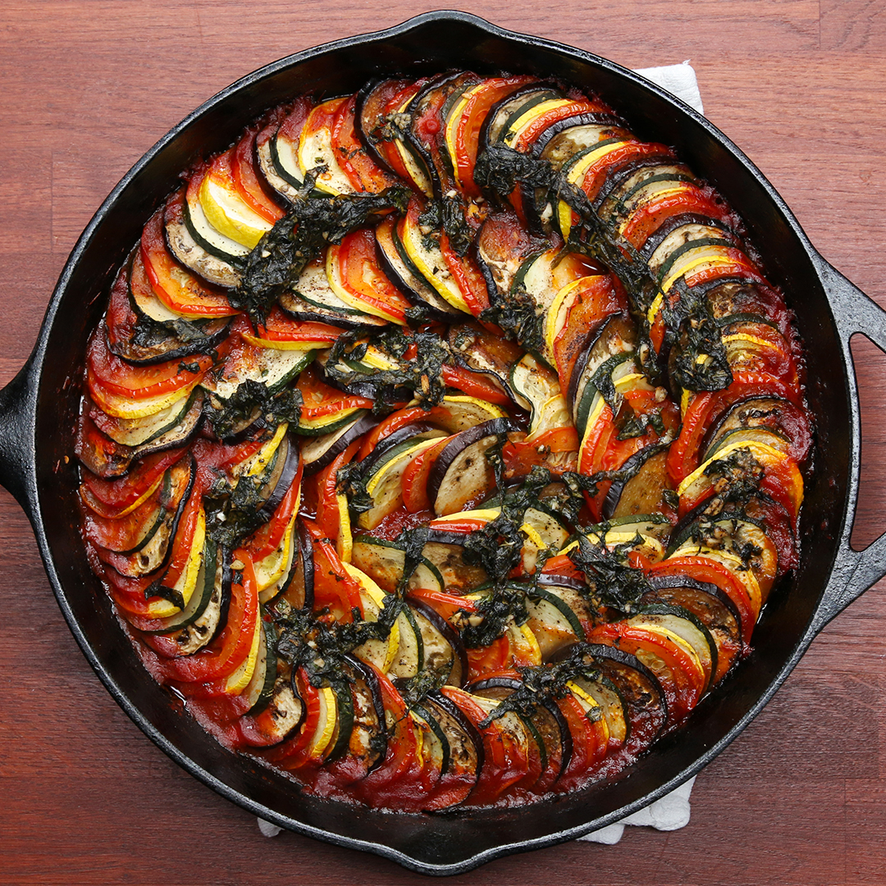

Ratatouille

Description:
A flavorful vegetable stew made with tomatoes, eggplant, zucchini, bell peppers, onions, and garlic. It's simmered until the vegetables are tender and seasoned with herbs like basil, thyme, and oregano.
Ingredients:
- Eggplant (aubergine): Choose firm and glossy eggplants without blemishes.
- Zucchini (courgette): Look for small to medium-sized zucchini with vibrant green skin.
- Bell peppers (red, yellow, or green): Use a combination of colors for visual appeal and flavor variety.
- Tomatoes: Fresh, ripe tomatoes are ideal, but canned tomatoes can be used as well.
- Onion: Yellow or white onions are commonly used, finely chopped.
- Garlic: Fresh garlic cloves, minced or finely chopped.
- Olive oil: Extra virgin olive oil is preferred for its rich flavor.
- Herbs: Fresh herbs like thyme, rosemary, and oregano add aromatic depth to the dish.
- Salt and pepper: To taste, for seasoning.
- Optional: Bay leaves, for extra flavor.
- Optional: Tomato paste or canned tomato sauce, for added richness and depth of flavor.
- Optional: Red wine vinegar or balsamic vinegar, for a touch of acidity.
- Optional: Fresh basil leaves, for garnish.
steps to prepare Ratatouille:
- Wash all the vegetables thoroughly.
- Trim the ends of the eggplant and zucchini, then cut them into slices about 1/4 to 1/2 inch thick.
- Remove the seeds and membranes from the bell peppers, then cut them into strips or chunks.
- Peel and dice the tomatoes.
- Finely chop the onion and mince the garlic.
- Heat olive oil in a large skillet or Dutch oven over medium heat.
- Add the chopped onions and cook until they are soft and translucent, about 5 minutes.
- Add the minced garlic and cook for another 1-2 minutes until fragrant.
- Add the sliced eggplant, zucchini, and bell peppers to the skillet.
- Stir to combine with the onions and garlic.
- Cook the vegetables for about 10-15 minutes, stirring occasionally, until they start to soften.
- Add the diced tomatoes to the skillet, along with any juices.
- Season the ratatouille with salt, pepper, and any herbs you're using, such as thyme, rosemary, or oregano.
- If desired, add a splash of red wine vinegar or balsamic vinegar for extra flavor.
- Reduce the heat to low and let the ratatouille simmer gently for about 20-30 minutes, stirring occasionally, until the vegetables are tender and the flavors have melded together.
- Taste and adjust the seasoning as needed.
- Once the ratatouille is done, remove it from the heat.
- Serve the ratatouille warm or at room temperature, garnished with fresh basil leaves if desired.
- Ratatouille can be enjoyed on its own as a vegetarian main dish, or served as a side dish with grilled meat, fish, or crusty bread.
- If you prefer, you can transfer the cooked ratatouille to a baking dish and bake it in the oven at 375°F (190°C) for about 20-30 minutes, until the vegetables are tender and slightly caramelized on top.